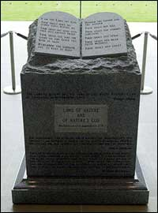

![[Benveniste & Josephson]](090503-Benveniste.jpeg)
El doctor Jacques Benveniste, cuya reputación fue efectivamente destruida luego de una investigación sobre sus experimentos homeopáticos defectuosos, ahora ha acusado al establishment científico de condenar como herejes a los investigadores que trabajan fuera de la corriente principal de la ciencia. Dice que algunos científicos temen que otros investigadores en otras áreas “marginales” como la telepatía y otras áreas paranormales sean condenados al ostracismo de forma parecida porque su trabajo no puede reproducirse “de forma convencional”. Esto parece implicar que hace falta introducir ojo de tritón y dedo de sapo…
Una investigación de Benveniste que parecía mostrar que la homeopatía era una noción viable fue publicada por la revista Nature, la prestigiosa publicación científica, con la salvedad de que un equipo independiente sería enviado por ellos para verificar la metodología. Yo fui parte de ese equipo. Al descubrir las verdaderas condiciones que predominaban, y luego de intentar una repetición bajo supervisión, Nature rechazó los hallazgos originales considerándolos indefendibles.
Como se esperaba, Benveniste dijo después que había sido víctima de una “cacería de brujas”, e incluso el Wall Street Journal acusó injustamente a Nature de arruinar su carrera por “arrogancia y crueldad”. No fue así. El intento de repetición no sólo había sido aceptado de antemano por el propio Benveniste, sino que el protocolo era el mismo que él mismo había diseñado, pero con fuerte aleatorización y mezcla de la identificación de las muestras (las de control y las de prueba) y duplicación aleatoria de las muestras para verificar las capacidades de verificación intra e interpersonales. Estos dos últimos aspectos mostraron alto nivel de competencia, aunque los resultados de la propia prueba fueran nulos.
Benveniste describe como “puritano” el sistema de revisión entre pares para juzgar la nueva investigación científica realizado por publicaciones como Nature. Dijo: “Por definición, el sistema representa la ciencia actual. Tan pronto como uno se sale un poco de las reglas, es rotulado como hereje”. El problema con esa actitud es que no ha habido fenómeno alguno que no se ajustara a la “ciencia actual”, así que no hay necesidad de postular métodos de verificación “fuera de las reglas”. De hecho, las subsecuentes verificaciones de las alegaciones de Benveniste, y de la homeopatía en general, han producido resultados negativos, de modo que parece evidente que no hay fenómeno por verificar, de cualquier modo. ¿Benveniste, un científico, pide que se rechace la ciencia?
El profesor Brian Josephson, un físico de la Universidad de Cambridge ganador del premio Nobel, afirma que él también es una víctima de esta agotadora insistencia en la validez y en los procedimientos científicos correctos. Afirma:
Hay un cierto estado de la mente en el que la gente se involucra emocionalmente y se ocupa de atacar las afirmaciones científicas.
No puedo encontrar evidencia de esto, y desde entonces, tanto Benveniste y Josephson, después de hacer mucha alharaca sobre lo que consideran su martirologio, aunque aceptaron ofertas para verificar sus afirmaciones (Josephson incluso desafió abiertamente a la Sociedad Norteamericana de Fisica para que lo hiciera), se retiraron silenciosamente sin responder a las generosas ofertas para otorgar fondos y realizar una verificación extensa, responsable y supervisada de la homeopatía. Incluso la JREF ofreció el premio del millón de dólares si los resultados fueran positivos, oferta a la que se respondió que los “verdaderos científicos” no buscan premios. Mencioné sólo dos palabras, y la objeción se desvaneció: “Premio Nobel”.
Le mencionaría al profesor Josephson que, para usar su frase,
Hay un cierto estado de la mente en el que la gente se involucra emocionalmente y se ocupan de abandonar el rigor científico en favor de los conceptos que prefieren.
Josephson permanece en su torre de marfil, rehusando responder a los interrogatorios sobre por qué canceló de pronto sus entusiastas planes para comprobar la homeopatía. ¿Puede ser que cuando le anunció su impetuosa presentación a Benveniste, se le dijo que todavía no estaban preparados para someterse a tal prueba, contrariamente a las convicciones del propio Josephson? Nunca lo sabremos. Pero sabemos que apenas el año pasado, cuando un grupo académico independiente en los Estados Unidos, usando el propio aparato de Benveniste, y su propio protocolo, realizó pruebas definitivas de sus afirmaciones… las pruebas fallaron. Algo para pensar, n’est-ce pas?
Benveniste está encerrado en una actitud rígida en la que sólo puede relacionarse con otros académicos, y elige tratar a una persona sin educación superior (como yo) como un bufón, de modo de no tener que vérselas con ese temible sentido común que yo invoco. En su opinión, tenga o no yo razón, mis opiniones y experiencia no cuentan para nada comparada con su capacitación y conocimiento, así que no tiene por qué considerarlas en lo absoluto. Este fuerte sentido galo de clase también me fue aplicado cuando nuestro equipo acababa de llegar a Paris en 1988 para realizar las pruebas de Nature. Había dos académicos franceses esperándonos en el vestíbulo del hotel, y su único interés era en mí, no en Walter Stewart, ni en (Sir) John Maddox, ambos académicos. Estos dos sabios franceses estaban visiblemente incómodos, quizá porque no estaban acostumbrados a tratar con personas sin doctorados. Luego de hablar considerablemente sobre la gran reputación del doctor Benveniste en los círculos académicos franceses, se pusieron de acuerdo en un discurso que me decía claramente: un hombre de ese tipo no puede ser cuestionado, ni puesto en duda, por alguien como yo. Eso simplemente no se hace. Estaban totalmente perplejos de que la revista Nature me hubiera permitido estar en el equipo que revisaría una repetición de los resultados de Benveniste, ya que yo no tenía respaldo social ni académico que me calificara para ello.
A pesar de ello, permanecí en el lugar, las pruebas se hicieron, y se anunciaron los resultados. Los medios franceses estuvieron malheureuses y lo hicieron muy evidente, pero nosotros probamos nuestro caso.
![[H. Weingarten]](090503-Weingarten.jpeg)
Leyendo un informe de la Comisión de Inversiones e Intercambio de Washington, D.C., nos enteramos que Henry Weingarten, un “astrólogo financiero” de la ciudad de Nueva York, mencionó [ciertas acciones] en un boletín enviado por correo electrónico y en su sitio web, afund.com, e hizo proyecciones astrológicas del precio de la acción sin revelar que era el poseedor de un certificado por 250.000 acciones. Weingarten, actuando como un consejero de inversiones para sus clientes, también compró esta acción para las cuentas de inversión de sus clientes sin revelar su conflicto de intereses a los dueños de las cuentas, o su certificado de acciones.
Se llegó a un acuerdo en el caso por medio del pago de una multa por parte de Weingarten, así como el compromiso de este último de no volver a participar en tales prácticas antiéticas e ilegales. Ahora trabaja para Karen Boesen, la astróloga danesa que promociona la “astrología financiera” en ese país. ¿Alguno vio la ética?
El lector Brett Armistead escribe:
Recuerdo cierta discusión hace un tiempo acerca de electrodomésticos parlantes, especialmente una cafetera, y esta mañana acabo de leer un párrafo o dos en el libro de Steven Pinker “El instinto del lenguaje” que, en resumen, dice que nuestros oídos (o, más exactamente, nuestro cerebro) están diseñados para “escuchar contenido verbal en sonidos que sólo tienen el parecido más remoto con el habla”. Escribe que los psicólogos Robert Remez y David Pisoni sintetizaron formas de onda siguiendo los mismos contornos de las bandas de energía de la frase “¿Dónde estabas hace un año?”. Un grupo de voluntarios describieron “sonidos de ciencia ficción” o “blips de computadora”. Pero a un segundo grupo de voluntarios se le dijo que los sonidos venían de un sintetizador de voz de mala calidad y pudieron determinar muchas de las palabras; una cuarta parte de ellos oyó la frase completa.
Es interesante conocer la ciencia y/o la psicología detrás de los chiflados y sus cafeteras parlantes.
Del sitio web de Bob Parks (Sociedad Física Estadounidense, Noticias del Mundo) rescatamos:
DISEÑO INTELIGENTE: ¿QUIÉN DISEÑÓ EL ESTADO DE TEXAS? Aunque la Comisión de Educación está eligiendo libros de texto para utilizar en las clases de ciencia de Texas para la próxima década (WN 11 Jul 03), hay un movimiento de peticionantes en el Condado de Montgomery, Texas, para pedir la misma cantidad de tiempo para enseñar Diseño Inteligente. En un poema, conocido por los escolares de Texas, el Diablo le pregunta al Señor si se olvidó algo cuando creó la tierra. “Dijo el Señor: ‘Sí, tenía mucho en las manos, pero lo dejé allá abajo a la altura del Río Grande’”. El diablo procede entonces a usar los restos para construir su propio infierno: Texas.
Randi comenta: Creacionismo = Ciencia chiflada = Diseño inteligente. Y no lo olviden.
El lector Danush Novakovski nos informa:
Pensé que podría interesarle algo que ha hecho AOL. Hace poco, cuando hice la actualización a la versión 8.0 de AOL, parte de la actualización era una gran cantidad de nuevos iconos de mensajería instantánea. Ridículamente, cinco sublistas de iconos relacionados con la astrología (Zodíaco Chino, Zodíaco Chino 2, Signos del Horóscopo, Zodíaco para Adolescentes, y Zodíaco) estaban listados en la categoría “Ciencia y Naturaleza”. Una cosa es que quieran intentar satisfacer las nociones pseudocientíficas de la gente, pero no deberían llamarlo “Ciencia y Naturaleza”.
Olvidas, Danush, que hay dinero en este tipo de insensateces. Esa es la razón por la que diarios que en otros aspectos son respetables tienen horóscopos. No les preocupa si hay verdad o no en el material; mientras el dinero llegue, está bien mentir y engañar.
Del corresponsal Jorge Mota:
![[Libro de Broch y Charpak]](090503-BrochCharpak.jpeg)
Algunos científicos portugueses, con el apoyo de Georges Charpak y Henri Broch, han protestado al organismo de control de la televisión portuguesa por haber contratado un astrólogo para un programa diario, en tiempos de problemas financieros que han reducido los fondos científicos. A continuación se halla mi traducción de la declaración que realizaron. Los científicos que apoyan esta iniciativa me han autorizado a presentarle a usted su caso, y dicen que en el futuro se producirán más acciones de protesta. Tengo la esperanza de que pueda brindarle algo de atención a este caso.
Declaración sobre la financiación de astrólogos con fondos públicos.
Los abajo firmantes desean expresar su preocupación por el financiamiento de astrólogos por parte del Estado Portugués, y pedir la corrección de esta situación anómala tan pronto como sea posible. El caso más serio y visible es el de la astróloga Cristina Candeias, a quien el Estado paga una suma mensual, probablemente muy por sobre el salario mínimo, por su participación en el programa diario “Praça da Alegria” en Canal Uno de la RTP (Televisión Portuguesa). Sospechamos que hay casos similares en otros medios públicos. La compañía “SAPO” utiliza a un astrólogo. No está claro si este servicio es pagado con fondos públicos o privados, dado que la compañía tiene relación con Telecom de Portugal. Sería importante identificar y cesar los pagos a todos los individuos que se dediquen a estas actividades pseudocientíficas en medios auspiciados por el estado.
Nuestros argumentos principales son los siguientes:
Incompatibilidad con un presupuesto estricto. Las recientes medidas para controlar el gasto público han incluido recortes de presupuesto en investigación y en enseñanza. Una consecuencia de esto ha sido una reducción de las becas de la “Fundação para a Ciência e Tecnologia”, creando en consecuencia desempleo y incertidumbre en un área que involucra a personas altamente calificadas, una parte del desarrollo del país extremadamente sensible y crítica que exige un esfuerzo continuo, de modo que Portugal pueda alcanzar una “masa crítica” de investigadores en varias áreas de la ciencia y la tecnología. Es insensato que este mismo Estado esté aportando fondos para actividades pseudocientíficas como la astrología, que no son reconocidas por el propio Estado.
Inmoralidad pedagógica. La señora Cristina Candeias tiene ella sola más cobertura semanal en la televisión pública que todos los científicos y todas las instituciones educativas y de investigación del país. Esto es incluso más inmoral dado que el estado financia, en un servicio de televisión pública en vivo de gran visibilidad, acciones que niegan y distorsionan todos los conceptos que se enseñan a miles de estudiantes en las escuelas públicas.
Nuestro pedido no requiere modificación alguna de la legislación portuguesa, sólo que se aplique estrictamente, como corresponde en un estado democrático.
La petición está firmada por 35 académicos de renombre que se encuentran preocupados por esta presunta validación oficialmente apoyada de la astrología. Estoy seguro de que el Senhor Mota nos mantendrá informados del avance en este asunto.
![[Libro de Galileo]](090503-GalileoBook.jpeg)
Un lector nos proporciona este interesante extracto del “Diálogo referido a los dos principales sistemas mundiales”, de 1632:
[Este evento] me recuerda a un hombre que quería venderme un método secreto de comunicarse con una persona que se hallaba a dos o tres mil millas de distancia, por medio de cierto efecto simpático de las agujas magnéticas. Le dije que se lo compraría gustoso, pero que me gustaría verlo en un experimento, y que sería suficiente para mí si él estuviera en una habitación y yo en otra. Respondió que su operación no sería detectada a tan corta distancia. Lo mandé a paseo, con el comentario de que yo no estaba de humor para ir al Cairo o a Moscú para el experimento, pero él si quería ir, yo me quedaría en Venecia y me ocuparía del otro extremo.
Para explicar el asunto, la alegación era que si se enviaba agujas magnéticas a distintas ubicaciones, todas responderían para coincidir con la rotación manual de la aguja “emisora”. Esto era alguna clase de idea telegráfica sobrenatural. Es interesante notar que otros primitivos dispositivos de comunicación temprana eran muy similares a esto, aunque estaban conectados por cables y no simplemente por una fantasía.
Para mí, esta situación no es para nada extraña. Muestra simplemente que hace 370 años se hacían la misma clase de afirmaciones increíbles, se ofrecían para la verificación, y luego se complicaban con términos y condiciones ridículos e inalcanzables, con el resultado de que no se hacía ninguna verificación. En la JREF recibimos estas cosas a diario.
El lector Mike Granville, de Sheffield, Inglaterra, escribe:
Disfruto leyendo sobre el Doctor Descalzo en el Observador (me refiero a un comentario reciente en su columna). Es uno de los artículos más divertidos del periódico, en un momento en el que necesitamos todas las risas que podamos conseguir.
Hace más o menos un año, me pidieron aconsejar a un hombre que tenía el cabello parado en la coronilla. (Ojalá yo tuviera esa suerte.) El consejo de Descalzo fue la aplicación de agujas de acupuntura en un punto a medio camino entre el escroto y el ano (es cierto, créame). La semana siguiente, otro corresponsal le escribió para decir que él también tenía el pelo parado en la coronilla. Siguió el consejo de las agujas ¡y ahora tenía todo el pelo parado!
No estoy seguro aún de que todo el asunto sea o no una parodia, pero Descalzo tiene un libro sobre este asunto que vende bien.
El lector Dave Bailey escribe desde Canadá:
Como quizá recuerde de sus días aquí en el Gran Norte Blanco, específicamente Ontario, tenemos un parque provincial grande, hermoso y de renombre mundial llamado Algonquin, bautizado por una tribu de aborígenes que habitaron el área durante milenios. Tienen una publicación llamada “El cuervo”, un boletín para visitantes publicado por un grupo llamado Amigos de Parque Algonquin. No sé quién escribió el artículo del Volumen 44, Número 9, del 14 de agosto de 2003, pero tengo la intención de averiguarlo y enviarle algunas palabras de aliento. He aquí una cita del primer párrafo:
Entre todos los seres vivos de nuestro planeta, nuestra especie tiene algunas capacidades realmente destacables. Una de la que podemos estar especialmente orgullosos es nuestra capacidad para utilizar pistas del presente para reconstruir eventos del pasado. Los ejemplos incluyen la deducción por parte de Charles Darwin del hecho de la evolución y la formulación posterior de una poderosa teoría para explicarla, fijando los cimientos de nuestra comprensión moderna de la vida.
¡Excelente! He aquí a alguien que no sólo entiende palabras tales como “teoría” y “hecho” sino que no teme usarlos, diga lo que dijere la oposición. No sé si han recibido ataques por esto, pero tienen mi apoyo incondicional.
¡Pensé que le gustaría saber que la racionalidad parece estar asomando en todas partes!
Una infección peligrosa e insidiosa, Dave. La gente empezará a pensar, usarán ese proceso cuando voten, ¡y antes de que nos demos cuenta, sólo habrá gente inteligente en los cargos electivos! ¿Dónde estaremos entonces? Chicos y chicas, digan conmigo: “¡En el cielo!”
[Aquí Randi hace un comentario sobre el libro “Class: A Guide Through the American Status System”, de Paul Fussell, un estudio sobre la clase trabajadora estadounidense, los “proles” a los que se refiere el título. Por brevedad no lo incluimos aquí. El texto completo de este comentario puede leerse en inglés en http://www.randi.org/jr/090503.html]
El reciente revuelo en relación con el monumento de roca de los Diez Mandamientos, de 2.400 kilogramos y 1,20 metros, que el Juez en Jefe Roy Moore instaló subrepticiamente en el lobby de la Corte Suprema del Estado, ha producido mucha diversión en todo el mundo. El ida y vuelta entre el (suspendido) juez Moore y el sistema legal del estado ha aparecido en los medios todos los días, y es difícil estar al día con el estado de la situación.
En resumen, los ocho jueces asociados de la Suprema Corte de Alabama fallaron en forma unánime que Moore debe atenerse a los fallos federales que establecen que él violó la separación de la iglesia y el estado, pero el bloque de granito, conocido como la Roca de Roy, permaneció en el vestíbulo hasta la semana pasada, cuando fue retirada y movida a un salón remoto, fuera de la vista del público, entre los llantos y los lamentos de los fieles. Este asunto ha sido noticia en todo el globo, y Moore ha atraído cientos de personas que lo apoyan en Alabama, los que se agruparon en frente de la corte, algunos de ellos soplando cuernos de carnero al estilo bíblico para llamar a las armas, en lo que al resto del mundo debe parecerle una payasada. Cómo es que los cristianos pueden decidir usar un cuerno de carnero (un objeto religioso decididamente semítico) debe ser desconcertante. Y, según nuestras últimas noticias, las paredes del edificio de la Suprema Corte, a diferencia de las de Jericó, todavía se sostienen. Algunos de los fieles marcharon con biblias, algunos agitaron siluetas de cartón de las tablas de los Diez Mandamientos, y otros cantaron “¡No me moverán!”. Los funcionarios han sido cuidadosos, naturalmente, de evitar provocar al número creciente de partidarios de Moore que han convertido las escalinatas de la corte en un terreno de acampada y un sitio de renacimiento religioso, acurrucados bajo los gargantuescos pilares de la corte cantando himnos y rezando. Los votos son los votos, después de todo.
Moore, que es republicano, en un momento se paró en frente de la multitud, gritando: “¡Para cumplir mi deber, debo obedecer a Dios!”. Sorprendió sólo a pocos descubrir que el Juez en Jefe le hablaba directamente a su deidad elegida. Y los medios lo registraron, por supuesto.
Moore parece creer realmente que está “en contacto” con su versión de dios. “Se me ha ordenado hacer algo que no puedo hacer”, dijo. “No puedo violar mi conciencia”. Los otros jueces, que decidieron que Moore debe obedecer la ley como cualquier otro ciudadano, cayeron bajo el fuego de los partidarios de Moore. En medio de los resoplidos del shofar 1, Rusty Thomas, un ministro religioso de Waco, Texas, les preguntó: “¿Judas significa algo para ustedes? Estos jueces traicionaron a un hombre justo. Pagarán el precio”. Me pregunto cuál será. ¿Treinta monedas de plata?
El juez federal que presidió el caso falló que el monumento puede ser exhibido en la oficina privada del Juez en Jefe Moore o en cualquier otra habitación dentro de la corte fuera de la vista del público, pero la oficina de Moore está en el tercer piso y el monumento es demasiado pesado para los ascensores, y casi para cualquier otro espacio disponible en la corte, dice el arquitecto del edificio. Me parece que Moore debería empezar a rezar fuertemente para obtener la intervención divina; este problema de la roca no es nada comparado con dividir el Mar Rojo, y con la conexión directa que tiene, no debería tener ningún problema invocando su propio milagro.
La Corte Suprema de los Estados Unidos declinó emitir un recurso de no innovar contra la orden de remoción, como les pidió Moore que hicieran. Todos los jueces del estado excepto el Juez en Jefe Moore se reunieron para decidir la acción correcta, resolviendo al cabo del tiempo ordenar la remoción de la roca. “No quiero hablar por mis colegas”, dijo un juez, “pero puedo decir que como grupo nos motivó esa orden de la corte federal”. ¡Maravilla de maravillas! ¡Los Jueces de la Corte Federal del Estado de Alabama decidieron, por medio del voto, obedecer y hacer cumplir la ley! Sólo me queda preguntarme cuánto tiempo habrían tolerado estas personas a un ciudadano ordinario que hubiera decidido ignorar una orden de la corte.
¿Cómo fue a parar allí la Roca de Roy? Como quizá sospechara usted, es una larga historia.
El Juez en Jefe Moore es un Bautista, hijo de un trabajador común. Salió del molde común de su clase, al asistir a West Point y graduarse en el puesto nº 640 de una clase de 800. Sirvió en Vietnam, luego se volvió fiscal. Durante un juicio por homicidio en 1978, tajeó su traje con una navaja Buck intentando representar un homicidio. Moore es un artista, le concedo eso.
En 1992, cuando pocos fuera de su región del noreste de Alabama habían oído hablar de él, colgó una placa de palisandro de los Diez Mandamientos sobre su banca. La Unión Norteamericana por las Libertades Civiles lo supo e inició acciones legales, pero Moore ganó ese caso. Parece que la victoria se le fue a la cabeza, y dijo que cuando colgó la placa no estaba buscando una cruzada, sino una decoración. Sin embargo, con tan fino sentido del espectáculo como tiene, reconoció un buen gancho publicitario y una premisa fuerte con la cual podría construir una carrera. En 2000, se postuló como Juez en Jefe de Alabama, con el lema “Roy Moore: aún es el juez de los Diez Mandamientos”. Ganó con facilidad.
Luego, en julio de 2001, sin permiso de los otros jueces, instaló el monumento de los Diez Mandamientos en la Corte Suprema del Estado. Ya que esta acción era un delito, se introdujo subrepticiamente a la corte en las tempranas horas de la mañana, mucho después de que los otros jueces se hubieran ido a sus casas. Moore y un par de trabajadores lo colaron en la rotonda de la Corte Suprema de Alabamma. No le pidió permiso a nadie, ya que era el juez superior del estado, y oficial custodio de la Corte Suprema. Incluso extrajo secretamente los planos del edificio de la Corte Suprema para encontrar la ubicación de una viga segura para apoyar el monstruoso engendro.
Este acto ilegal le ganó a Moore la adulación (y el apoyo) de los votantes y de otros legisladores que estaban deseosos de unírsele en sus planes religiosos. Del día a la noche, era famoso. La roca es más que un objeto para él; es la base de su ascenso de la oscuridad en la Alabama rural al juzgado más alto del estado.
El asunto de los Diez Mandamientos no mejoró su perspicacia legal, sin embargo, según Jim Hedgspeth, fiscal de distrito de Gadsden, Alabama. “Para mí, ni siquiera conoce la ley”, dijo. “La mayor parte del tiempo tenía la idea de que los libros de leyes a su alrededor eran simple decoración, no para usarse”. Pero los mandamientos, parece, no eran sólo la decoración que Moore afirmó que eran; obviamente los entendió como instrucciones. Rehusó incluir la figura de un átomo o un referencia al Corán en el monumento que instaló. Su argumento fue que la ley estadounidense estaba basada en creencias judeocistianas. Su exhibición, dijo, era una afirmación acerca del basamento moral de la ley, no un avance de una religión sobre otra.
¿Qué? ¿Cómo dijo? La version de esos mandamientos que Moore escogió para exhibir, definitivamente promueven su versión de la deidad que él eligió y definió. Nos referiremos a esto más adelante.
Aunque Moore sabía perfectamente que los otros ocho jueces de Alabama tenían el poder para anular su orden administrativa, supuso que no tendría que retractarse, y aparecería como un héroe ante la Derecha Religiosa. Es precisamente lo que sucedió. Hay quienes predicen que su suspensión aumentaría la creciente popularidad del Juez en Jefe Moore, un republicano elegido para el puesto. “Esto sólo aumentará su martirologio”, afirmó William Stewart, un profesor de ciencias políticas de la Universidad de Alabama. “Muestra cuán lejos está dispuesto a llegar por la causa”. Shelby Foote, historiador de Menphis, dijo: “Él hizo que pareciera que defendía a Dios y todos lo que se oponían a él estaban contra Dios. Para mucha gente de mente simple, esto era totalmente lógico. Y una vez que empezó a salir en los titulares, no cesó en su empeño”.
El editor religioso Don Lattin preguntó en el San Francisco Chronicle, “¿Cuáles Diez Mandamientos [están implicados en este asunto]?” Señaló:
Están los Diez Mandamientos Judíos, los Diez Mandamientos Católicos, los Diez Mandamientos Luteranos, los de Charlton Heston, los de la Biblia del Rey Jacobo, la de la Versión Estándar Revisada, y ninguno está de acuerdo con el otro en cuál mandamiento es cuál… o lo que significan realmente. Incluso la Biblia contiene dos versiones, uno en Éxodo 20:1-17 y otra ligeramente diferente en Deuteronomio 5:6-21.
Y hay, por supuesto, varias traducciones al inglés de esos antiguos textos hebreos. Según ciertas cuentas, hay en realidad veintinueve mandamientos, no sólo diez. Diez es un lindo número, esperable de una deidad, y la base de nuestro sistema de numeración. Estaría mal tener un número más extraño, ¿verdad? Como escribe el lector Barry McGuire de Johnson Valley, California:
¿Los diez mandamientos? Los mandamientos que se exhibían en Alabama no son los que se inscribieron en las tablas de piedra. Son sólo los primeros diez de las varias docenas de mandamientos que se le entregaron a Moisés oralmente. (Éxodo 20.) Los únicos mandamientos que la Biblia llama los diez mandamientos eran los que se inscribieron en el segundo grupo de tablas de piedra. (Éxodo 34:28.) Estoy a favor de que estos se exhiban públicamente. Especialmente el nº 10: No cocinen cabritos en la leche de su madre. (Éxodo 34:26.) Esos diez mandamientos oficiales (los que dice que se grabaron en tablas de piedra) se inscribieron en ambos lados de las tablas, no en uno. (Éxodo 32:15.)
El resumen de Alabama: los mandamientos equivocados, mal mostrados. ¿Pero qué otra cosa puede esperarse de quienes reciben inspiración trascendente?
Está bien, examinemos los diez mandamientos en cuestión. Utilizo aquí la versión de la Biblia de estudio “Dios Habla Hoy”, de las Sociedades Bíblicas Unidas 2, del Éxodo 20:1-17:
1. Yo soy el Señor tu Dios, que te sacó de Egipto, donde eras esclavo. No tengas otros dioses aparte de mí.
Primero, este es un discurso para los “hijos de Israel”, no para cualquiera, y ciertamente no para los cristianos, o los no semitas. Segundo, me parece que esto indica que está bien tener otros dioses que Jehová/Yavé/D_s/YHWH/quien sea, mientras él/ello sea el Número Uno. ¿Y esta no es una estructura de creencias con orientación religiosa? ¡Esta es una orden, difundida, publicada, de que aquéllos que se encuentren en el estado de Alabama deben creer en la versión del dios judeocristiano en la que cree Moore! ¡Está grabado en piedra!
2. No te hagas ningún ídolo ni figura de lo que hay arriba en el cielo, ni de lo que hay abajo en la tierra, ni de lo que hay en el mar debajo de la tierra. No te inclines delante de ellos ni les rindas culto, porque yo soy el Señor tu Dios, Dios celoso que castiga la maldad de los padres que me odian, en sus hijos, nietos y bisnietos; pero que trato con amor por mil generaciones a los que me aman y cumplen mis mandamientos.
No discutiré la visión geológica y física del mundo, medieval y primitiva, que esto expresa, pero ¿no es el monumento mismo un “ídolo”? Veo aquí un monumento claramente hecho (no es una formación natural) y también veo, en iglesias en todo el mundo, incluyendo a las bautistas, crucifijos y otras imágenes fabricadas. Así que ¿todos ignoran este mandamiento divino? Nótese también que esta deidad de la que tenemos miedo es celosa y vengativa. Incluso destruye a tus hijos y nietos si no la complaces. Sólo libra de su ira a aquéllos que lean este aviso, aparentemente. ¿Es este acaso un documento para mostrar a una familia, no hablemos ya de ofrecérselos como advertencia? Como observó el lector Joe Granski, de Virginia:
No sólo se nos dice qué debemos adorar, ahora se nos dice, explícitamente, lo que NO debemos adorar, y lo que pasará si no seguimos esta orden, y lo que les pasará a nuestros hijos si no lo hacemos. Me suena a castigo cruel e inusual (este… ¿dónde escuché esa frase antes?). Supongo que los católicos, los hindúes y cualquier otra religión que use estatuas o imágenes en sus ceremonias están condenados.
Continuando…
3. No hagas mal uso del nombre del Señor tu Dios, pues él no dejará sin castigo al que use mal su nombre.
El Sr. Granski hace notar que
… [esto] impide la libertad de expresión. Y además dice que seremos juzgados según corresponda por desobedecer este mandamiento bastante irracional. ¡No se olvide que esto se encuentra en LOS TRIBUNALES DEL ESTADO!
Y sobre el cuarto mandamiento,
4. Acuérdate del día de reposo, para consagrarlo al Señor. Trabaja seis días y haz en ellos todo lo que tengas que hacer, pero el séptimo día es de reposo consagrado al Señor tu Dios. No hagas ningún trabajo en ese día, ni tampoco tu hijo, ni tu hija, ni tu esclavo o tu esclava, ni tus animales, ni el extranjero que viva en tus ciudades. Porque el Señor hizo en seis días el cielo, la tierra, el mar y todo lo que hay en ellos, y descansó el día séptimo. Por eso el Señor bendijo el día de reposo y lo declaró día sagrado.
pregunta el señor Granski:
¿A qué día de reposo se refiere esto? ¿Al que va del crepúsculo del viernes al crepúsculo del sábado para judíos y musulmanes? ¿O el de medianoche del sábado a medianoche del domingo para los cristianos? ¿Esto significa que los servicios gubernamentales tienen sólo un día de descanso por semana? ¿Cuál día? ¿Ahora es ilegal arar mi campo en dicho día de reposo porque dios le dijo a mi buey que descansara? Nótese que esto también se refiere al Génesis no sólo como un hecho sino como la justificación de esta regla. Por supuesto, el Génesis es la historia de la creación de todos, así que supongo que no depende de la creencia particular.
Por supuesto, este sinsentido de no trabajar el domingo (¡o el sábado!) ha sido ignorado convenientemente por los cristianos y los judíos (excepto por los judíos ortodoxos, ¡y por favor no me hagan hablar de eso!) y los musulmanes, porque no es práctico. Parece que podemos ignorar convenientemente cualquiera de esos mandamientos si no nos convienen, y quizá no nos los creemos de todos modos. En Toronto, había “leyes azules del domingo” 3 que nos impedían salir a comprar nada que no fuera absolutamente necesario; estaban exentos de la prohibición los medicamentos, comida básica (¡pero nada de trivialidades como caramelos!), muletas, biblias, etc. Algunas de estas cosas todavía están en vigencia, una indicación de que Canadá tiene cosas que hacer para ponerse a la par del resto del mundo.
5. Honra a tu padre y a tu madre, para que vivas una larga vida en la tierra que te da el Señor tu Dios.
Aquí tenemos una advertencia flagrante nuevamente: Haz esto o te mataré.
6. No mates.
Suena razonable… esto es, si ignoramos los pelotones de fusilamiento, las sillas eléctricas, las horcas, las inyecciones letales. Otro tema sobre el que mejor no empiezo a hablar…
7. No cometas adulterio.
Seamos serios, gente. Este texto se escribió en un tiempo en el que “adulterio” significaba contacto sexual con una mujer casada, una mujer comprometida, o una virgen que no era la esposa del adúltero. El sexo con otras mujeres no estaba incluido, porque el motivo era establecer la paternidad de cualquier vástago; era un asunto civil, no uno criminal. Como señala el señor Granski, una virgen desflorada tenía un “valor” mucho menor en el mercado de las novias, y el castigo era un pago igual a la pérdida de valor. La vida es complicada…
8. No robes.
Bueno, está bien. Pero yo diría que una evasioncita de impuestos, o incluir una rayadura vieja en el reclamo de la póliza de seguro del auto, no debería conducir a la inmersión en azufre. Igualmente, no soy autoridad en tales asuntos.
9. No digas mentiras en perjuicio de tu prójimo.
Pregunta: ¿esto incluye los chismes? Si es el caso, el Infierno va a estar muy concurrido. En la legislación civil, ya hay reglas vigentes, con serias penalidades para la difamación, el libelo, el perjurio, etc., pero no creo que necesitemos una experiencia peor que participar en el sistema judicial, muchas gracias. Prefiero el azufre.
10. No codicies la casa de tu prójimo: no codicies su mujer, ni su esclavo o su esclava, ni su buey, ni su asno, ni nada que le pertenezca.
Ah, caray. Aquí vamos. Parece que sólo querer tener algo que pertenezca a un prójimo puede traer la condenación. “Codiciar” figura en el diccionario de la Real Academia Española como “desear con ansia las riquezas u otras cosas”, pero eso no es obtener lo que se desea, ¡es sólo desearlo!
Hablando en serio, tal mandamiento en un edificio del gobierno dedicado a la ley, le dice al que lo lee que, oficialmente, no debe desear nada que ya no sea suyo. En este punto, Moore está intentando dictar los pensamientos de la ciudadanía. Pensar, preguntarse, fantasear, imaginar, todo es parte de ser humano. Moore quiere controlar el pensamiento, algo de lo que se daría cuenta si pasara unos minutos sin la ceguera del fanatismo que lo ha confundido y lo ha llevado a ser un hazmerreír tan santurrón.
En el siguiente capítulo del Éxodo, acerca del que Moore no sabe (o elige no saber) nada, encontramos más reglas que permiten a los padres vender a sus hijas como esclavas (21:7) y se nos dice que “el que insulte a su padre o a su madre, será condenado a muerte” (21:17). Esos mandamientos no fueron incluidos entre los Diez Mandamientos que Moore puso en la rotonda del edificio de la Corte Suprema de Alabama. ¿Por qué no? En sus decisiones legales, ¿Moore usa este tipo de pensamiento selectivo para dictar sus fallos?
Moore arguyó que instalar el monumento era “una forma de honrar los basamentos religiosos de las leyes estadounidenses”. Eso no es válido. La Constitución no afirma estar “sometida a Dios”; es la Declaración de Independencia la que alega que los derechos inalienables emanan de un “creador”. No se menciona un dios o un creador en parte alguna del texto de la constitución. Los mandamientos que prohiben adorar a otros dioses y que exigen que uno honre al padre y a la madre de uno, no se reflejan en lo absoluto en las leyes estadounidenses. Y como se señaló más arriba, algunas leyes estadounidenses están en oposición directa a los Diez Mandamientos, por ejemplo la pena de muerte.
Como una nación que actualmente lucha para mantener su credibilidad y su imagen en el escenario del mundo, no necesitamos que esta escena ridícula se represente en público. En lo personal estoy avergonzado de la posición del Juez Moore, de sus acciones y de su ignorancia de la realidad, ya que se reflejan en mi país. Ha realizado lo que sabía era una acción impropia (podría afirmarse que una acción ilegal) y luego violó abierta y flagrantemente una orden de revertir esa acción dada por una corte federal, y no ha mostrado remordimiento ni incomodidad. De hecho, está graznando y pavoneándose bajo la mirada que ha atraído hacia sus acciones. La queja ética que se le hizo afirmaba que falló en “observar altos estándares de conducta” y “respetar y cumplir la ley”. ¿Y este es el presidente de la Corte Suprema de Alabama?
Debo darle amplio crédito a quienes me proporcionaron la mayoría de lo que he resumido aquí. Los lectores Jim Kutz y Joe Granski, entre otros, compartieron sus opiniones conmigo. De hecho, dejaré que Joe cierre esta discusión con las preguntas que él hace sobre las “Diez recetas de Dios para no ir al infierno”:
Antes que nada, ¿cómo es que el reconocimiento de Dios por parte del estado no viola la separación de la iglesia y el estado? Por lo que sabía, creer en dios era el dominio expreso de la religión. ¿Los ateos y los agnósticos son reconocidos por el estado sólo como salvajes sin dios, y por lo tanto, no merecen una legislación sin prejuicios? ¿Los ciudadanos de Alabama pueden creer en lo que quieran, siempre y cuando crean en un dios?
Buenas preguntas, Joe…

- 1
-
El cuerno de carnero al que se hace mención más arriba. [N. del T.]
- 2
-
El artículo de Randi utiliza la Biblia del Rey Jacobo, con la grafía británica. La Biblia “Dios Habla Hoy” tiene la ventaja de ser un estudio serio sobre el significado del texto según se estima que se lo entendía en la época, volcado a lenguaje contemporáneo. [N. del T.]
- 3
-
Se dice que se llamaban “leyes azules” por una larga lista de actividades prohibidas en la colonia de New Haven a mediados del siglo XVII, las que se habían impreso en papel azul. [N. del T.]
Comentarios
Comments powered by Disqus